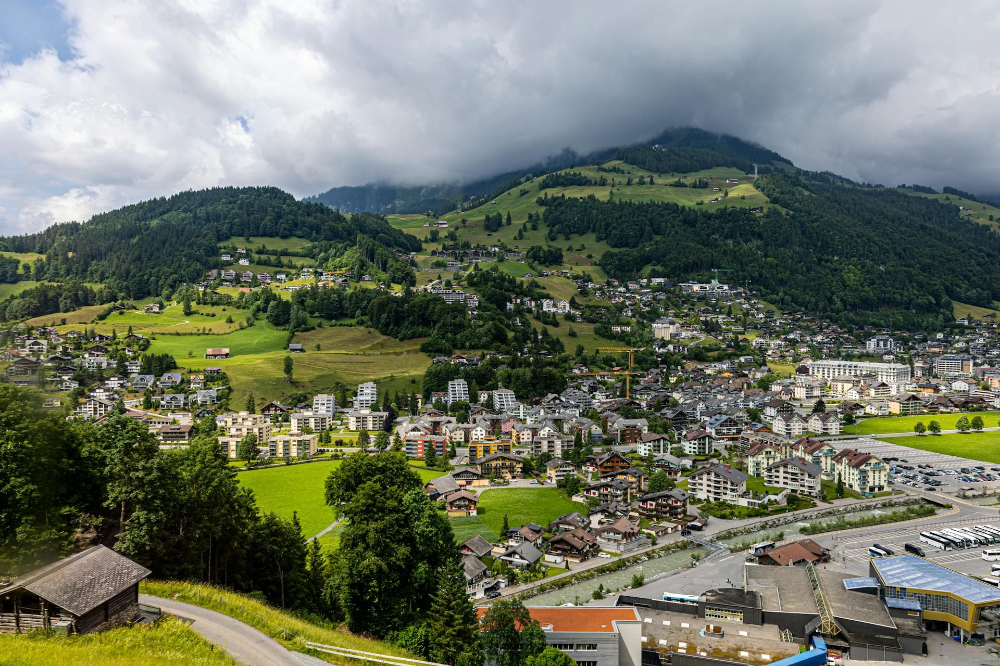
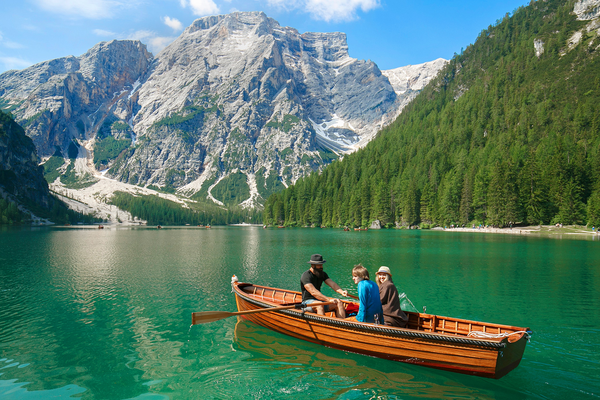
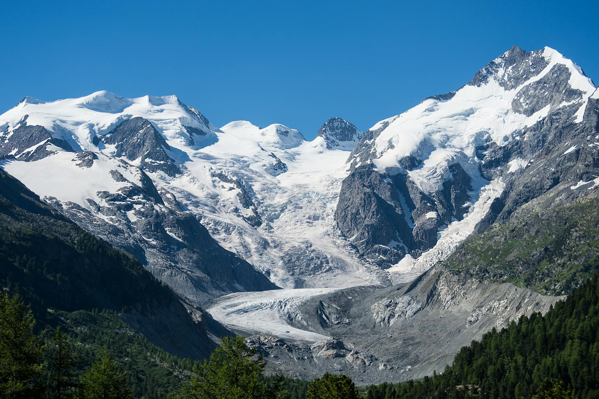
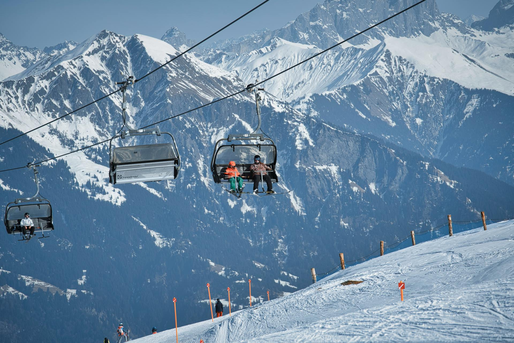
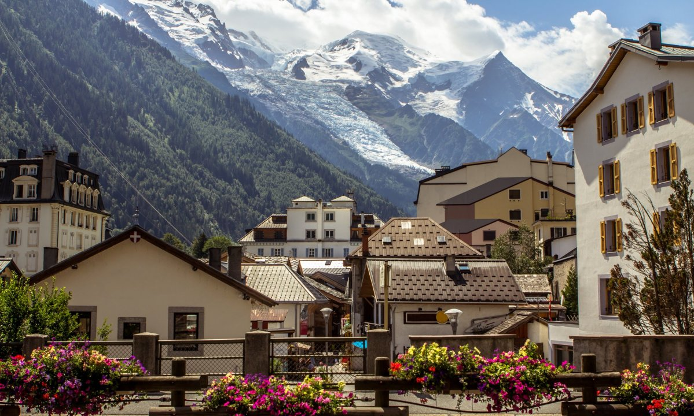
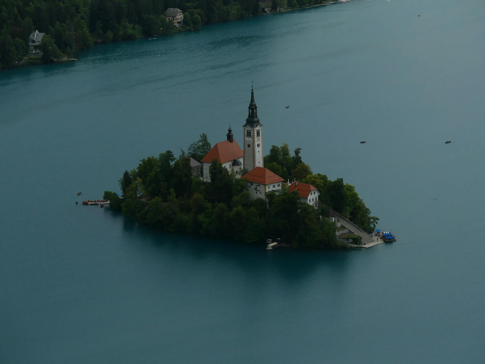
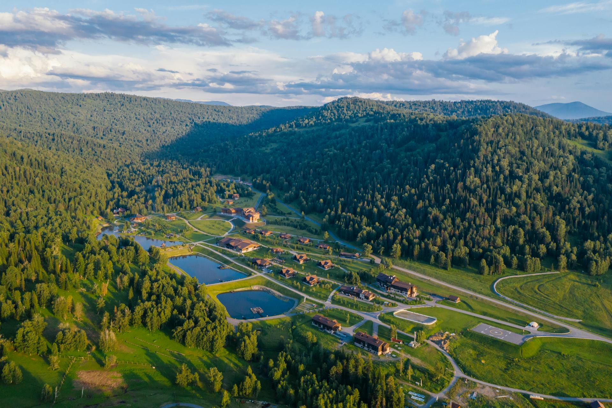
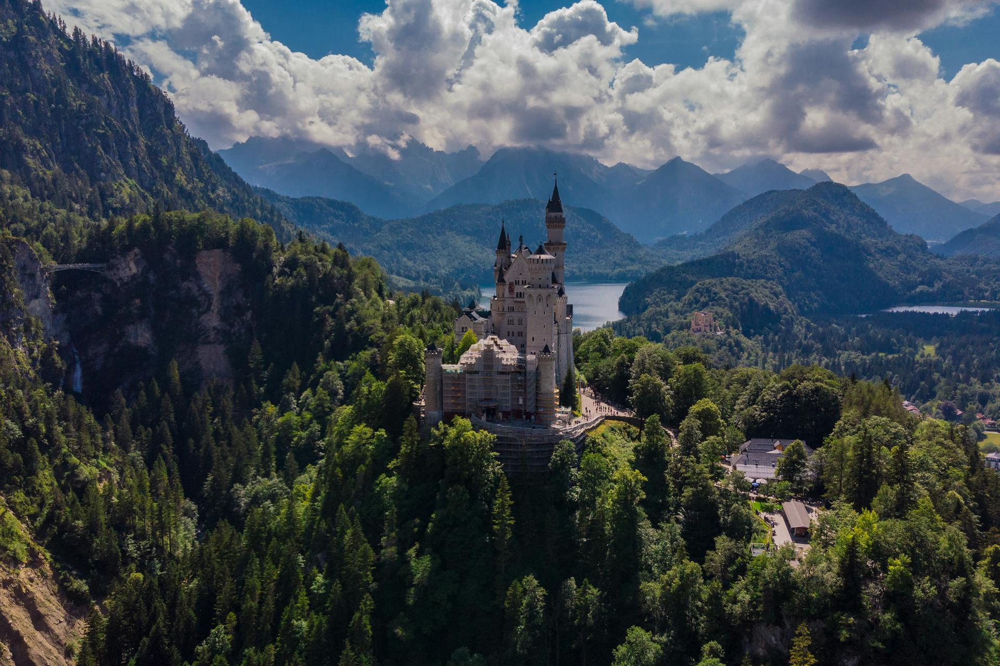
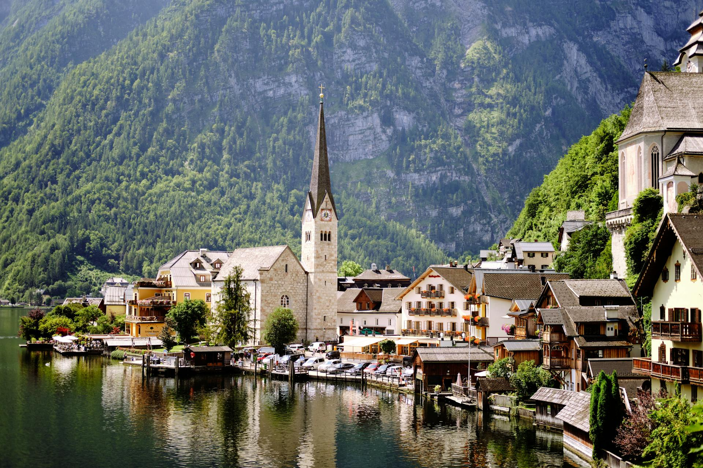

Від затишних шале Швейцарії до диких стежок Словенії. Твій наступний крок починається тут.

Ексклюзивний хайкінг біля підніжжя найвідомішої піраміди Альп з вечерею у панорамному ресторані.

Поєднання італійської гастрономії та велнес-відпочинку серед рожевих скель ЮНЕСКО.

Альпінізм на професійному рівні. Підкорення крижаних стін та ночівля у високогірних притулках під зірками.

Найкращі MTB-траси Європи. Швидкість, адреналін та неймовірні краєвиди австрійських Альп на двох колесах.

Термальні басейни з видом на Монблан. Ранкова йога на терасі та повна детоксикація від міського шуму.

Прогулянки на традиційних човнах, медитації біля замку та тихі вечори в оточенні Юлійських Альп.

Легкі маршрути для дітей, відвідування ферм з дегустацією сирів та затишні сімейні шале.

Подорож у часі для всієї родини. Нойшванштайн, таємничі ліси та легенди німецьких Альп.

Прогулянки на човнах по Гальштатту, підйом на панорамні майданчики та пікніки на березі гірських озер.
Грудень — Березень
Червень — Вересень
Все, що варто знати перед подорожжю в серце гір
Так, у кожен пакет "Luxury" включено повне медичне страхування та страхування від нещасних випадків під час активного відпочинку (включаючи фрірайд та альпінізм).
Ми підбираємо маршрути індивідуально. Для категорії "Easy" достатньо базової форми, для "Hard" — ми проводимо попередню консультацію з гідом.
Більшість наших партнерських шале у Швейцарії та Італії дружні до тварин (Pet-friendly). Попередьте нас заздалегідь, і ми підберемо відповідне житло.
Після заповнення форми на сайті з вами зв'яжеться менеджер. Передоплата складає 30%, решта — за 14 днів до початку туру.